Префектура Хоккайдо · Ёити · вино
Camel Farm Winery: итальянский винодел и северные виноградники Ёити
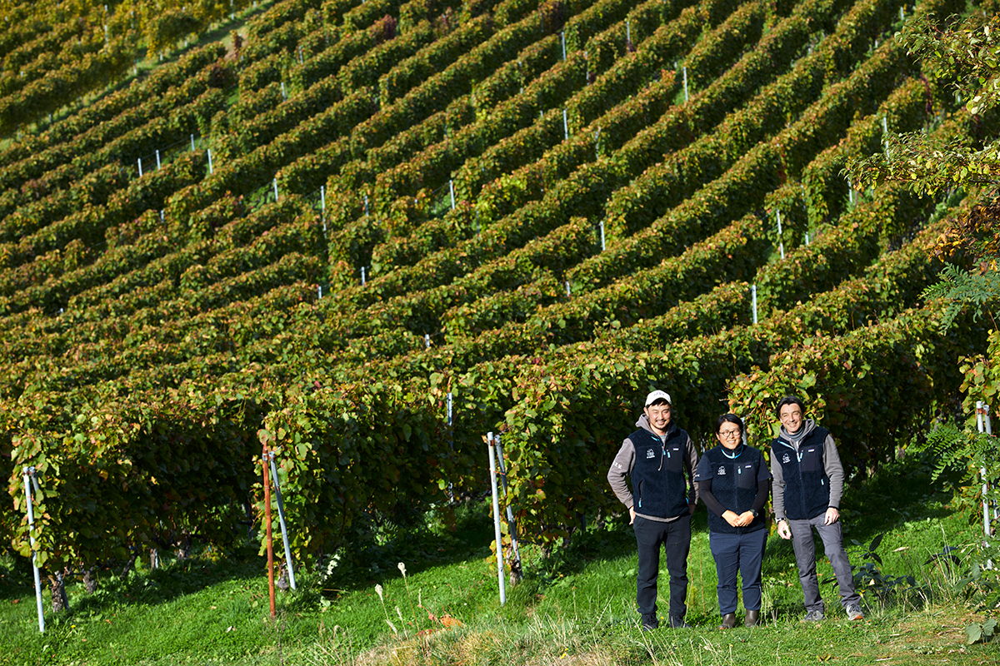
Сеть магазинов импортных продуктов, итальянский винный консультант с мировым именем и фермер, который растил виноград в Ёити с 1980-х годов. Из этой встречи выросла Camel Farm Winery, винодельня, которая быстро заставила говорить о Ёити во всём мире.
Начало
Виноградник, который передали из рук в руки
Ёити стоит на берегу Японского моря, а виноградники Camel Farm Winery лежат в районе Нобору: пологие холмы с трёх сторон закрыты горами, а с четвёртой открываются к морю. Ветер с моря, как говорят здесь, приносит на склоны минералы.
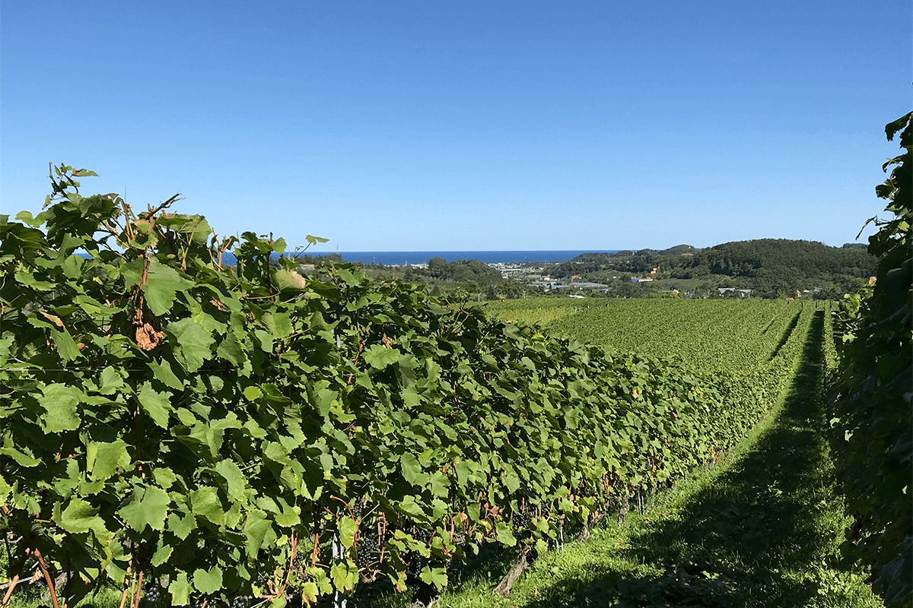
Много лет виноградарство Ёити вёл за собой хозяин фермы Фудзимото: винный виноград здесь выращивали с 1980-х годов. В 2014 году его 16 гектаров перешли к сельскохозяйственной компании Camel Farm, которую основала группа Camel Coffee, владелец сети магазинов импортных продуктов KALDI COFFEE FARM. Советником проекта стал Риккардо Котарелла, итальянский винный консультант с мировым именем, один из лидеров современного итальянского виноделия. Неудивительно, что винный мир ждал от новой винодельни многого.
Работу на винограднике в компании первой вызвалась взять на себя одна из сотрудниц. Вместе с командой она училась у прежнего хозяина фермы, и часть лоз заменили на пино нуар и шардоне. Котарелла был уверен, что из винограда Ёити с его чистой кислотностью выйдет прекрасное игристое. Поэтому сердцем винодельни, которую достроили в 2017 году рядом с виноградником, стало игристое по методу Шарма: второе брожение, которое даёт пузырьки, идёт в закрытом резервуаре.
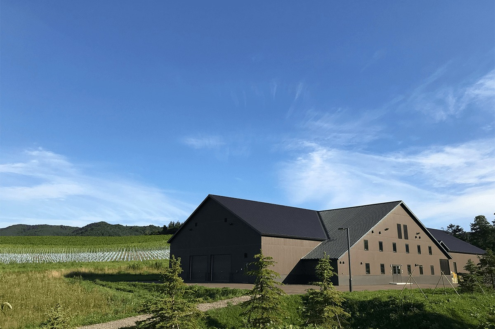
Первый урожай компания выпустила в 2018 году, в 2019 году представила свои вина на съезде итальянских энологов, а в 2020 году «Pinot Noir Private Reserve 2018» получил золото на конкурсе International Wine Challenge в Лондоне. В 2021 году «Pinot Noir Private Reserve 2019» взял золото на Decanter World Wine Awards, одном из самых авторитетных винных конкурсов мира. Японское вино получило там золото впервые.
Вино
Сбор в два-три захода
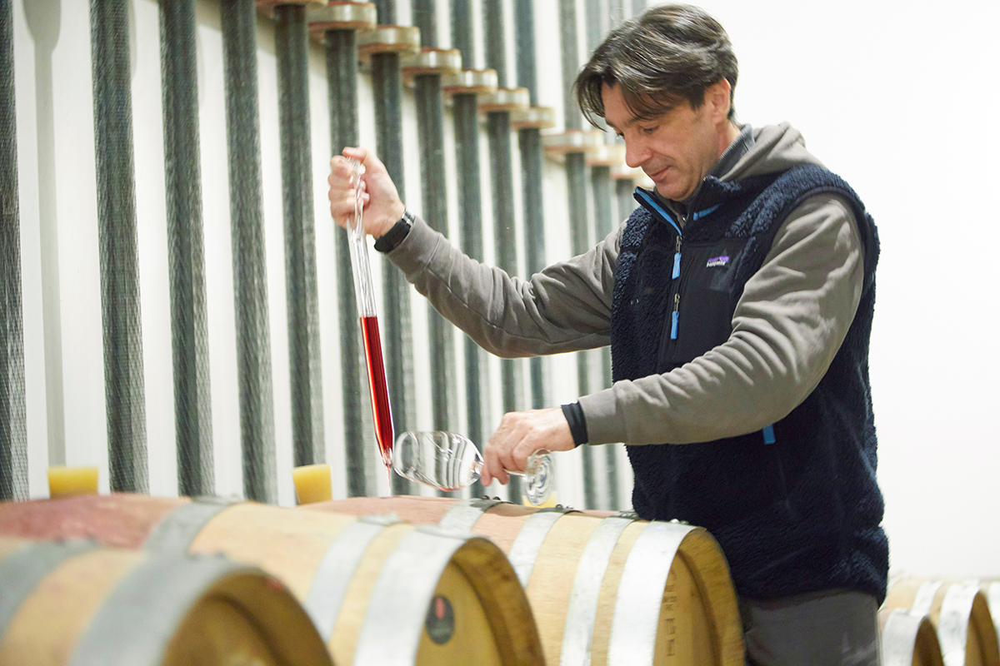
Вино делает Анджело Тотаро, винодел из команды Котареллы. Он говорит по-японски, у него мягкое лицо и тихий голос, но, когда речь идёт о том, чтобы сделать вино лучше, компромиссов он не признаёт.
«Каждый участок раньше убирали за один раз. Мы стали делить сбор на два, на три захода, смотря по тому, как созревает виноград»
Анджело Тотаро, винодел
Результат видно по вину. В ноябре 2023 года вышли два флагмана: игристое «Camel Brut Méthode Traditionnelle Blanc de Noirs 2018» и «Pinot Noir Private Reserve 2021». По сравнению с урожаем 2019 года, который принёс винодельне золото, это уже следующая ступень.
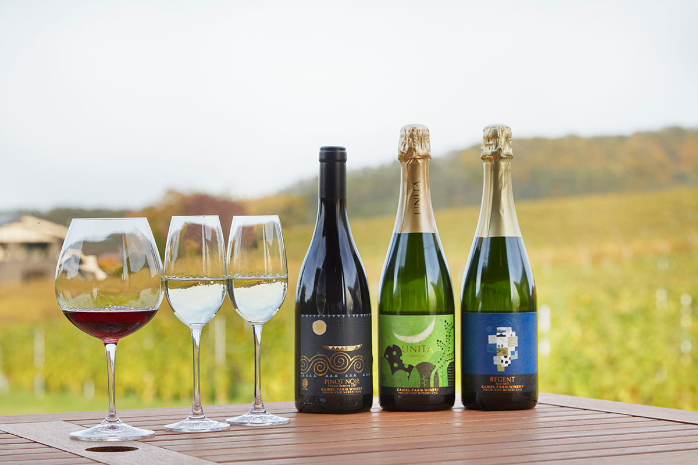
В 2021 году винодельня выпустила серию UNITA: по-итальянски это слово значит «единство». В серию вошли первое на винодельне игристое без дозажа, полусухое игристое, розовое и красное вино с выдержкой в бочке.
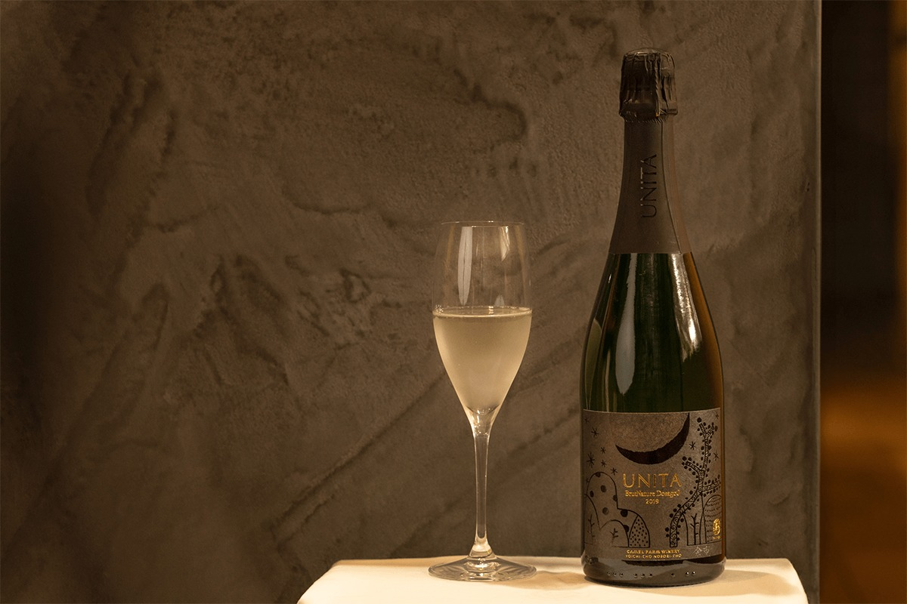
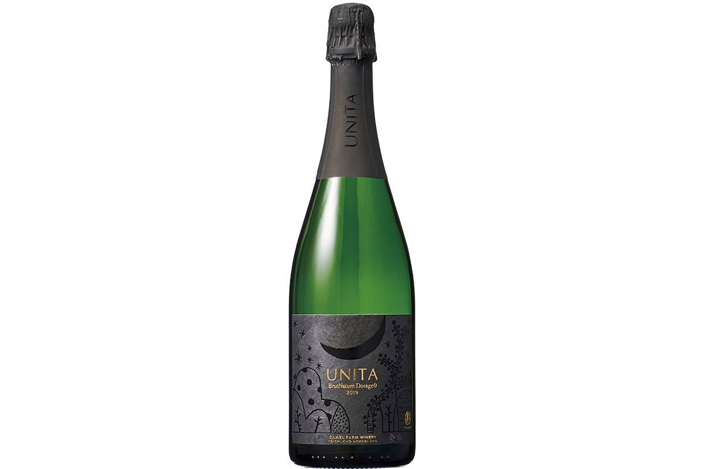
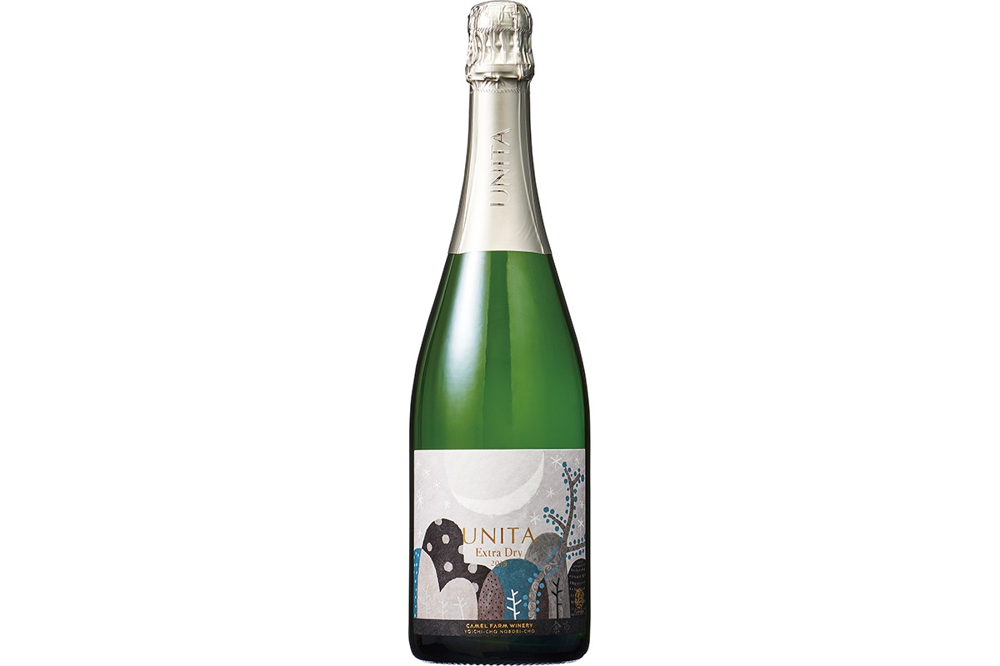
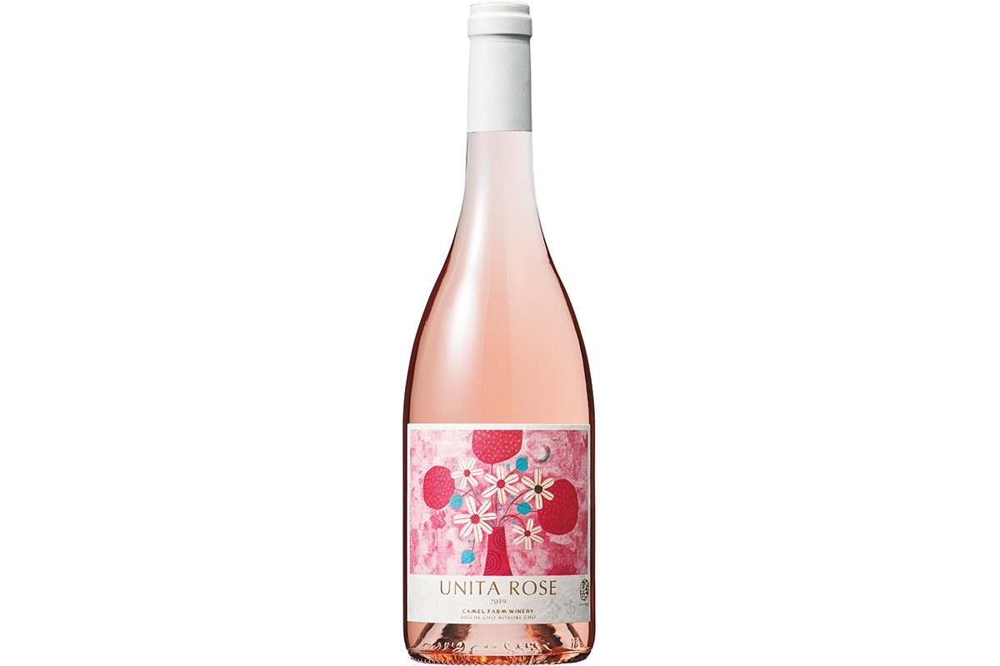
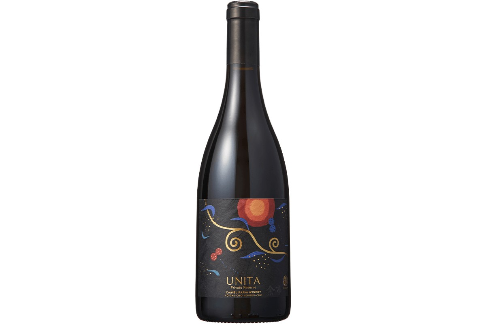
Виноградник
Лозы под снегом
К 2023 году собственные виноградники винодельни занимали 13,5 гектара, главные сорта здесь шардоне и пино нуар. В год винодельня выпускает около 100 000 бутылок. Лозы растут шпалерами на пологих холмах, обращённых к морю.
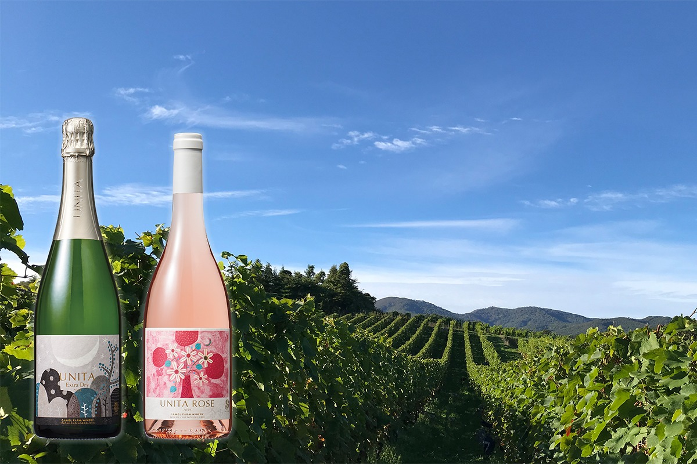
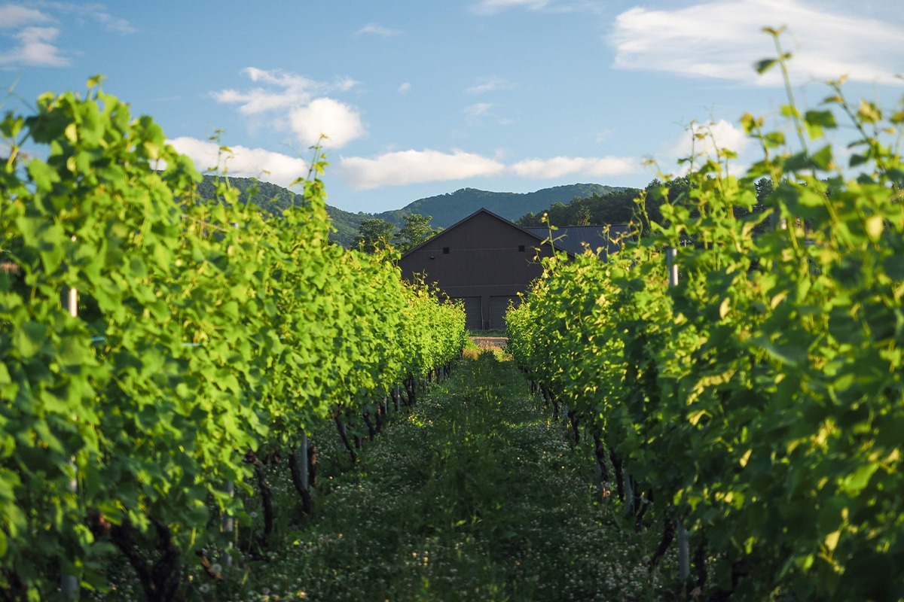
На этой прохладной северной земле лозы зимуют под снегом, а такое в винодельческих районах мира встречается редко. Холодный климат даёт ягодам ту самую свежую кислотность, ради которой Котарелла и сделал ставку на игристое.
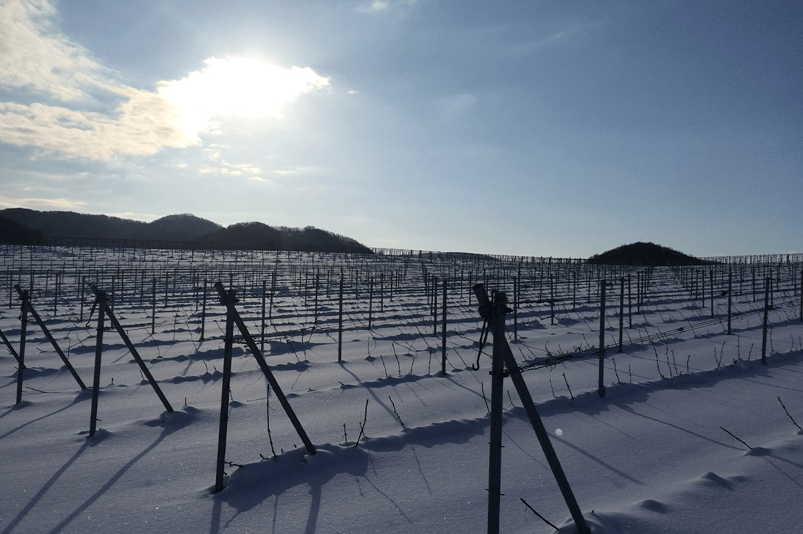
Этикетка
Знак «цунагу»
На этикетках и мюзле, металлических колпачках игристого, стоит эмблема «цунагу», что по-японски значит «связывать». Вино здесь называют подарком природы, а знак говорит о благоговении перед природой и о том, что вино связывает людей. Этикетки нарисованы на тему «цветы, птицы, ветер и луна»: на них японские цветы и деревья, птицы, ветер и луна.
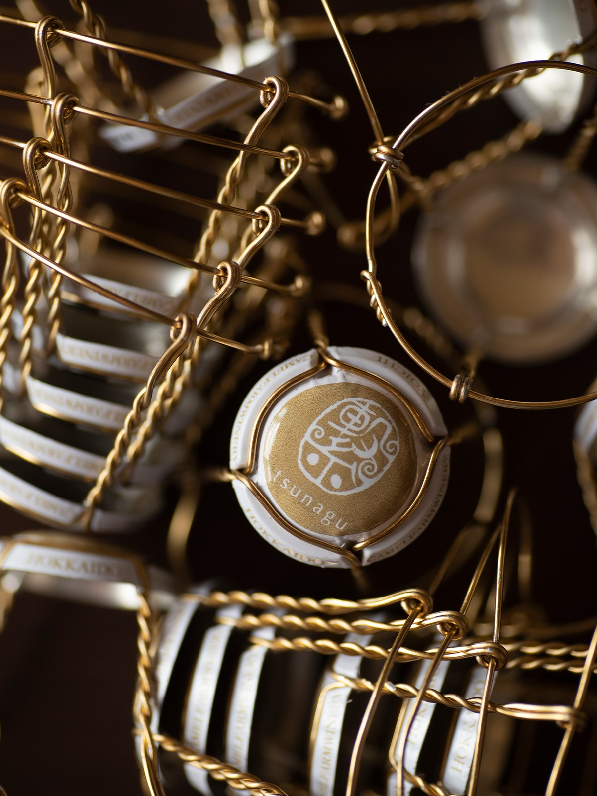
Визит
Как попасть на винодельню
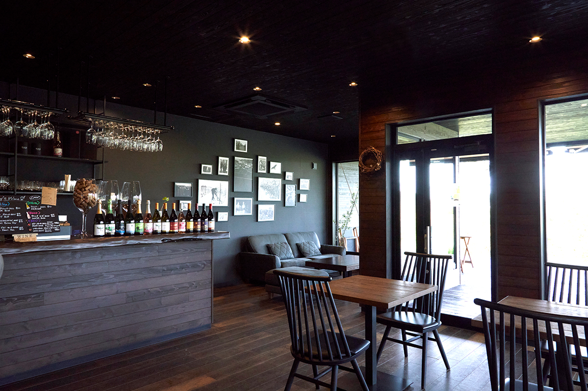
В 2023 году в Ёити, где гостей принимают немногие винодельни, Camel Farm Winery выделялась дегустационным залом и экскурсиями. С 23 февраля 2024 года магазин и кафе закрыты, и с тех пор (по состоянию на 2026 год) винодельня не принимает обычных посетителей и не продаёт вино на месте. Попасть сюда можно осенью: на сбор урожая зовут волонтёров, а после работы желающим показывают винодельню. В 2025 году такой праздник урожая прошёл 20 сентября, о наборе объявляют на сайте и в Facebook винодельни.
О других винодельнях района читайте в статьях Вина Ёити: долина Нобору и Mongaku Valley Winery, а где попробовать вина Ёити, рассказываем в статье Рестораны с винами Ёити.
Camel Farm Winery
- Адрес
- префектура Хоккайдо, уезд Ёити, Ёити, Нобору-тё, 1408
- Телефон
- +81 135-22-7751
- Даты
- обычных посещений нет; осенью праздник сбора урожая для волонтёров, запись на сайте
- Как добраться
- около 30 минут на машине от Отару, около часа от Саппоро
- Сайт
- camelfarm.co.jp
Фото: Кэнта Ёсидзава, Сёго Оидзуми.